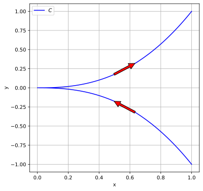

2 Week 15
- This checkmark symbolizes an optional content in the current course; you may skip them if you’re not interested.
- The responsive layout on mobile portrait might not be as polished; if content is overlapped thus unintelligible, please rotate device to landscape.
2.1 HW12.4 - SCalcCC5 1.6.010.
Consider the parametric equations below. \[ x = t^2,\quad y = t^5 \]
2.1.1 (a)
Sketch the curve by using the parametric equations to plot points. Indicate with an arrow the direction in which the curve is traced as t increases.
- To help with sketching, you might want to observe that the tangent line at a point on the parametric curve where \(t=t_0\) is determined by its tangent vector, i.e. a line passing through the points \(\big(x(t_0),y(t_0)\big)\) and \(\big(x(t_0)+x'(t_0),y(t_0)+y'(t_0)\big)\).
2.1.1.1 Solution
The left plot is animated.

2.1.2 (b)
Eliminate the parameter to find a Cartesian equation of the curve.
2.1.2.1 Solution
\[ \begin{aligned} &y=t^5 \Rightarrow t=\sqrt[5]{y}=y^{1/5}\\ \Rightarrow\,&x=t^2=(y^{1/5})^2=y^{2 / 5} \end{aligned} \]
- You might (or might not…) want to know that the singularity at \((0,0)\) is called a cusp, or even read a bit more on algebraic curves.
2.2 Recall: Curves Defined with Polar Coordinates
2.2.1 Change of Coordinate System
From what you already know about coordinates, one can make a change of coordinate for curves from polar to Cartesian by \[ \left\{\begin{aligned} x(t)&=r(t)\cdot\cos\theta(t)\\ y(t)&=r(t)\cdot\sin\theta(t). \end{aligned}\right. \]
Or conversely, \[ \left\{\begin{aligned} r(t)&=\sqrt{x(t)^2+y(t)^2}\\ \theta(t)&=\arctan\left(\frac{y(t)}{x(t)}\right). \end{aligned}\right. \]
- However, since we are considering negative \(r\) sometimes, e.g. HW 13.9 - SCalcCC5 A.H.1.035., you might wish to segment the curve when it passes through the origin.
2.2.2 Arc Length and Area inside Curve
\[ \begin{aligned} A&=\int_a^b \frac{1}{2} r^2\,\mathrm{d}\theta,\\ L&=\int_a^b \sqrt{r^2+\left(\frac{d r}{d \theta}\right)^2}\,\mathrm{d}\theta. \end{aligned} \]